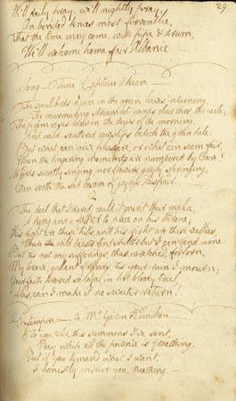

The Chevalier's Lament
La complainte du Chevalier
Text by Robert Burns (1787)
Tune - Mélodie"Captain O'Kane", ascribed to O'Carolan (1670 -1718)
Sequenced by Christian Souchon

|
To the tune:
Also known as “Cailin tighe moir,” "Captain Henry O'Kain," “Giolla an Bimhoir,” "The Wounded Hussar", "Captain O'Kane" is an Irish Air or Planxty (6/8 time). “Captain O’Kane” is thought to have been composed by the blind Irish harper Turlough O'Carolan (1670-1738) for his friend Captain O’Kane (or O’Cahan), a ‘sporting’ Irishman of a distinguished County Antrim family who was well-known in his day as “Slasher O’Kane”. Thus is the information provided by O’Sullivan, in "Carolan, The Life and Times", based on information in Hardiman’s "Irish Minstrelsy", 1831. O’Carolan authority Donal O’Sullivan could find no attribution in any source to O’Carolan, but says the style is his and he generally accepts it is a composition of the bard's. O’Sullivan also could find no further information on ‘Slasher’ O’Kane. O’Neill (1922) says: “We learn from Alexander Campbell’s song ‘The Wounded Hussar’ printed with the music in Smith’s Irish Minstrel (Edinburgh, 1825) the O’Kain was Captain Henry O’Kain who died of his wounds ‘on the banks of the dark rolling Danube.’” O’Neill (1913) quotes Patrick O’Leary, an Australian correspondent, who wrote that the Captain of the title was “the hero of a hundred fights, from Landon to Oudenarde, who, when old an war-worn, tottered back from the Low Countries to his birthplace to die, and found himself not only a stranger, but an outlawed, disinherited, homeless wanderer in the ancient territory that his fathers ruled as Lords of Limavady.” The earliest printing of the tune Francis O’Neill could located was in James Aird’s 1788 Selection of Scotch, English, Irish and Foreign Airs (vol. 3), although he also found it (under the title “Captain Oakhain: A Favourite Irish Tune") in McGoun's Repository of Scots and Irish Airs, Strathspeys, Reels, etc.(Glasgow, 1803) — and yet the same title and presumably the same tune was printed in Alexander McGlashan’s 1786 collection . Gow also gives “Irish” as the tune’s provenance. The song “The Wounded Hussar” was written to the melody by Alexander Campbell (O’Sullivan gives his name as Thomas) and appears in Smith's Irish Minstrel (Edinburgh, 1825) . Source "The Fiddler's Companion" (cf. Liens). To the text: As stated on page 29 of Burns' "Second Commonplace Book" (see picture above) commenced on April 1787, the "Chevalier's Lament", first written in March of 1788 is to be sung to the tune "Captain O'Kane". On the same page we find the last verse of "The Bonnie Lass of Albanie" and the first verse of "Epistle to Gavin Hamilton". On March 31, 1788, Burns wrote from Mauchline, to his friend James Cleghorn, farmer, as follows: ' Yesterday, as I was riding thro' a track of melancholy, joyless muirs, between Galloway and Ayrshire; it being Sunday, I turned my thoughts to psalms and hymns and spiritual songs; and your favourite air Captain 0'Kane coming at length in my head, I tried these words to it.' You will see that the first part of the tune must be repeated. I am tolerably pleased with these verses, but as I have only a sketch of the tune, I leave it with you to try if they suit the measure of the music' Burns adopted Cleghorn's suggestion to complete the song with a Jacobite stanza, which is assumed to be sung by Prince Charles Stuart, after the Battle of Culloden. Some time early in 1793 he sent a complete copy of the song to Thomson. Source "Complete songs of Robert Burns Online Book" (cf. Links). The song is included in Hogg's "Jacobite Relics", Volume II , in the Appendix "Jacobite Songs", under N°16. He dubbs it "modern" instead of mentioning that it is by Burns. |
A propos de la mélodie:
Cette mélodie qui porte aussi les titres de “Cailin tighe moir,” "Captain Henry O'Kain," “Giolla an Bimhoir,” "Le hussard blessé", "Captain O'Kane", est un air irlandais ou "Planxty" (6/8). On admet que “Captain O’Kane” a été composé par le harpiste aveugle irlandais Turlough O'Carolan (1670-1738) pour un ami, le Capitaine O’Kane (ou O’Cahan), sémillant Irlandais issu d'une famille en vue du Comté d'Antrim et que l'on connaissait à l'époque sous le sobriquet de “O’Kane le Sabreur”. C'est ce qu'écrit O’Sullivan, dans son "Carolan, sa vie et son temps", qui tire lui-même ses informations de Hardiman, "Irish Minstrelsy", 1831. Le spécialiste d'O’Carolan, Donal O’Sullivan , n'a trouvé aucune source attribuant ce morceau à ce compositeur, mais compte tenu du style de cette mélodie, il accepte d'y voir la main du barde. Il n'a rien pu trouver non plus au sujet d'O'Kane "le Sabreur". O’Neill écrit en 1922: “Alexander Campbell nous dit dans son ‘Hussard blessé’, publié sur cet air dans l'"Irish Minstrel" de Smith à Edimbourg en 1825, que cet O’Kain était le capitaine Henry O’Kain, mort de ses blessures 'Sur les bords du Danube qui roule des flots noirs’” O’Neill (1913) cite Patrick O’Leary, un de ses correspondants australiens qui, lui, est d'avis que ce capitaine était “le héros d'une centaine de batailles, de Landon à Oudenarde, qui revint des Pays-Bas, vieux et épuisé, pour mourir au pays, mais qui y fut considéré comme un étranger, pire même, comme un indésirable vagabond, déshérité sur des terres que ses ancêtres avaient régies en tant que seigneurs de Limavady.” La plus ancienne version imprimée de cette mélodie, Francis O’Neill la situe chez James Aird’s, en 1788, dans sa "Sélection" d'airs écossais, anglais, irlandais et étrangers (vol. 3), mais il la trouve également (sous le titre de “Captain Oakhain: un air populaire irlandais") dans le "Repository of Scots and Irish Airs, Strathspeys, Reels, etc." de McGoun (Glasgow, 1803) — pourtant le même titre et, on peut le supposer, la même mélodie furent imprimés dans la collection d'Alexander McGlashan, 1786 . Gow indique aussi l'“Irlande” comme le pays d'origine du morceau. La chanson “Le hussard blessé” a été écrite sur cette mélodie par Alexander Campbell (O’Sullivan le prénomme Thomas) et fut publiée dans l' Irish Minstrel (Edimbourg, 1825) de Smith. Source "The Fiddler's Companion" (cf. Liens). A propos du texte: Comme il est dit page 29 du 2ème "Cahier à tout faire" de Burns commencé en avril 1787 (cf. illustration ci-dessus), "La complainte du Chevalier", commencée en mars 1788, se chante sur l'air du "Capitaine O'Kane". Sur la même page on trouve la dernière strophe de la "Jolie fille d'Albanie" et la première strophe de l' "Epitre à Gavin Hamilton". Le 31 mars 1788, Burns écrivait de Mauchline à son ami, le cultivateur James Cleghorn: 'Hier, alors que je parcourais à cheval des landes mélancoliques et mornes, entre le Galloway et l'Ayrshire, et que c'était dimanche, il me trottait dans la tête des psaumes, des cantiques et des chants spirituels; c'est ainsi que votre air préféré, le "Capitaine 0'Kane" a fini par s'imposer à moi. J'ai essayé d'y adapter ce texte. Comme vous le verrez, le début doit être répété. Je suis assez content de ces vers, mais, n'en connaissant que des bribes, je m'en remets à vous pour voir s'ils épousent la mélodie.' Comme Cleghorn le lui suggérait, Burns ajouta à la chanson une strophe Jacobite censée être récitée par le Prince Charles Stuart après la bataille de Culloden. Vers le début de l'année 1793, il envoya un exemplaire complet de la chanson à Thomson. Source "Complete songs of Robert Burns Online Book" (cf. Links). Ce chant figure dans les "Jacobite Relics", Volume II, de Hogg , dans l'annexe "Jacobite Songs", sous le N°16. Hogg indique "moderne" au lieu de nommer l'auteur, R. Burns. |

|
1. The small birds rejoice in the green leaves returning,
The murmuring streamlet winds clear thro' the vale, The primroses blow in the dews of the morning, And wild scatter'd cowslips bedeck the green dale: But what can give pleasure, or what can seem fair, When the lingering moments are number'd by care? No flow'rs gaily springing, nor birds sweetly singing, Can soothe the sad bosom of joyless despair!
2. The deed that I dar'd, could it merit their malice,
|
1. Tous les oiseaux font fête au retour du printemps,
Le clair ruisseau serpente et murmure au vallon, La primevère embaume en l'air frais du matin, Et le coucou sauvage émaille le gazon: Quel plaisir espérer d'un spectacle si beau, Quand le temps suspendu se charge de soucis? Nulle éclosion de fleurs et nul gai chant d'oiseau, N'effacent la tristesse au fond d'un cœur meurtri! 2. Ce que j'ai fait vaut-il cette haine imbécile: Rendre un trône à son père et le rendre à son roi? Abritant le fauve, ils ne m'offrent nul asile, Ces monts et ces vaux qui lui reviennent de droit. Ce ne sont pas, pourtant, mes misérables maux, Mais votre ruine, amis, qui cause, hélas, mes pleurs. Sa loyauté mena plus d'un à son tombeau, Pourrai-je mettre un jour un terme à vos malheurs? (Trad. Ch.Souchon (c) 2003) |